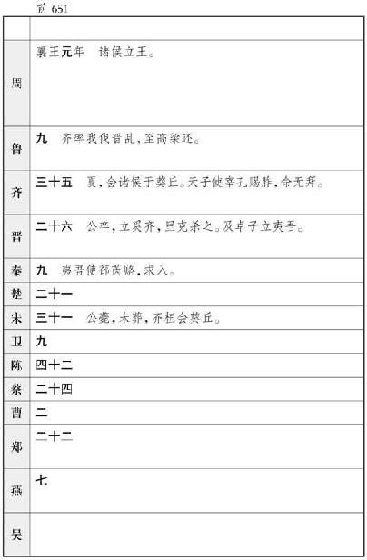

孙子武
者，齐
人也。以兵法见于吴王阖庐
。阖庐
曰：“子之十三篇，吾尽观之矣，可以小试勒兵乎？”对曰：“可。”阖庐
曰：“可试以妇人乎？”曰：“可。”于是许之，出宫中美女，得百八十人。孙子
分为二队，以王之宠姬二人各为队长，皆令持戟。令之曰：“汝知而心与左右手背乎？”妇人曰：“知之。”孙子
曰：“前，则视心；左，视左手；右，视右手；后，即视背。”妇人曰：“诺。”约束既布，乃设
钺，即三令五申之。于是鼓之右，妇人大笑。孙子
曰：“约束不明，申令不熟，将之罪也。”复三令五申而鼓之左，妇人复大笑。孙子
曰：“约束不明，申令不熟，将之罪也；既已明而不如法者，吏士之罪也。”乃欲斩左右队长。吴王
从台上观，见且斩爱姬，大骇。趣使使下令曰：“寡人已知将军能用兵矣。寡人非此二姬，食不甘味，愿勿斩也。”孙子
曰：“臣既已受命为将，将在军，君命有所不受。”遂斩队长二人以徇。用其次为队长，于是复鼓之。妇人左右前后跪起皆中规矩绳墨，无敢出声。于是孙子
使使报王曰：“兵既整齐，王可试下观之，唯王所欲用之，虽赴水火犹可也。”吴王
曰：“将军罢休就舍，寡人不愿下观。”孙子
曰：“王徒好其言，不能用其实。”于是阖庐
知孙子
能用兵，卒以为将。西破强楚
，入郢，北威齐晋
，显名诸侯，孙子
与有力焉。
孙武 既死，后百馀岁有孙膑 。膑 生阿鄄 之间，膑 亦孙武 之后世子孙也。孙膑 尝与庞涓 俱学兵法。庞涓 既事魏 ，得为惠王 将军，而自以为能不及孙膑 ，乃阴使召孙膑 。膑 至，庞涓 恐其贤于己，疾之，则以法刑断其两足而黥之，欲隐勿见。
齐 使者如梁 ，孙膑 以刑徒阴见，说齐 使。齐 使以为奇，窃载与之齐 。齐 将田忌 善而客待之。忌 数与齐 诸公子驰逐重射。孙子 见其马足不甚相远，马有上、中、下辈。于是孙子 谓田忌 曰：“君弟重射，臣能令君胜。”田忌 信然之，与王及诸公子逐射千金。及临质，孙子 曰：“今以君之下驷与彼上 驷，取君上驷与彼中驷，取君中驷与彼下驷。”既驰三辈毕，而田忌 一不胜而再胜，卒得王千金。于是忌 进孙子 于威王 。威王 问兵法，遂以为师。
其后魏 伐赵 ，赵 急，请救于齐 。齐威王 欲将孙膑 ，膑 辞谢曰：“刑馀之人不可。”于是乃以田忌 为将，而孙子 为师，居辎车中，坐为计谋。田忌 欲引兵之赵 ，孙子 曰：“夫解杂乱纷纠者不控卷，救斗者不搏撠，批亢捣虚，形格势禁，则自为解耳。今梁赵 相攻，轻兵锐卒必竭于外，老弱罢于内。君不若引兵疾走大梁 ，据其街路，冲其方虚，彼必释赵 而自救。是我一举解赵 之围而收弊于魏 也。”田忌 从之，魏 果去邯郸 ，与齐 战于桂陵 ，大破梁 军。
后十三岁，魏
与赵
攻韩
，韩
告急于齐
。齐
使田忌
将而往，直走大梁
。魏
将庞涓
闻之，去韩
而归，齐
军既已过而西矣。孙子
谓田忌
曰：“彼三晋
之兵素悍勇而轻齐
，齐
号为怯，善战者因其势而利导之。兵法，百里而趣利者蹶上将，五十里而趣利者军半至。使齐
军入魏
地为十万灶，明日为五万灶，又明日为三万灶。”庞涓
行三日，大喜，曰：“我固知齐
军怯，入吾地三日，士卒亡者过半矣。”乃弃其步军，与其轻锐倍日并行逐之。孙子
度其行，暮当至马陵
。马陵
道狭，而旁多阻隘，可伏兵，乃斫大树白而书之曰“庞涓
死于此树之下”。于是令齐
军善射者万弩，夹道而伏，期曰“暮见火举而俱发”。庞涓
果夜至斫木下，见白书，乃钻火烛之。读其书未毕，齐
军万弩俱发，魏
军大乱相失。庞涓
自知智穷兵败，乃自刭，曰：“遂成竖子之名！”齐
因乘胜尽破其军，虏魏太子申
以归。孙膑
以此名显天下，世传其兵法。
吴起 者，卫 人也，好用兵。尝学于曾子 ，事鲁君 。齐 人攻鲁 ，鲁 欲将吴起 ，吴起 取齐 女为妻，而鲁 疑之。吴起 于是欲就名，遂杀其妻，以明不与齐 也。鲁 卒以为将。将而攻齐 ，大破之。
鲁 人或恶吴起 曰：“起 之为人，猜忍人也。其少时，家累千金，游仕不遂，遂破其家。乡党笑之，吴起 杀其谤己者三十馀人，而东出卫 郭门。与其母诀，啮臂而盟曰：‘起 不为卿相，不复入卫 。’遂事曾子 。居顷之，其母死，起 终不归。曾子 薄之，而与起 绝。起 乃之鲁 ，学兵法以事鲁君 。鲁君 疑之，起 杀妻以求将。夫鲁 小国，而有战胜之名，则诸侯图鲁 矣。且鲁卫 兄弟之国也，而君用起 ，则是弃卫 。”鲁君 疑之，谢吴起 。
吴起 于是闻魏文侯 贤，欲事之。文侯 问李克 曰：“吴起 何如人哉？”李克 曰：“起 贪而好色，然用兵司马穰苴 不能过也。”于是魏文侯 以为将，击秦 ，拔五城。
起 之为将，与士卒最下者同衣食。卧不设席，行不骑乘，亲裹赢粮，与士卒分劳苦。卒有病疽者，起为吮之。卒母闻而哭之。人曰：“子卒也，而将军自吮其疽，何哭为。”母曰：“非然也。往年吴公 吮其父，其父战不旋踵，遂死于敌。吴公 今又吮其子，妾不知其死所矣。是以哭之。”
文侯 以吴起 善用兵，廉平，尽能得士心，乃以为西河 守，以拒秦 、韩 。
魏文侯 既卒，起 事其子武侯 。武侯 浮西河 而下，中流，顾而谓吴起 曰：“美哉乎山河之固，此魏国 之宝也！”起 对曰：“在德不在险。昔三苗氏 左洞庭 ，右彭蠡 ，德义不修，禹 灭之。夏桀 之居，左河济 ，右泰华 ，伊阙 在其南，羊肠 在其北，修政不仁，汤 放之。殷纣 之国，左孟门 ，右太行 ，常山 在其北，大河 经其南，修政不德，武王 杀之。由此观之，在德不在险。若君不修德，舟中之人尽为敌国也。”武侯 曰：“善。”
吴起 为西河 守，甚有声名。魏 置相，相田文 。吴起 不悦，谓田文 曰：“请与子论功，可乎？”田文 曰：“可。”起 曰：“将三军，使士卒乐死，敌国不敢谋，子孰与起 ？”文 曰：“不如子。”起 曰：“治百官，亲万民，实府库，子孰与起 ？”文 曰：“不如子。”起 曰：“守西河 而秦 兵不敢东乡，韩赵 宾从，子孰与起 ？”文 曰：“不如子。”起 曰：“此三者，子皆出吾下，而位加吾上，何也？”文 曰：“主少国疑，大臣未附，百姓不信，方是之时，属之于子乎？属之于我乎？”起 默然良久，曰：“属之子矣。”文 曰：“此乃吾所以居子之上也。”吴起 乃自知弗如田文 。
田文 既死，公叔 为相，尚魏 公主，而害吴起 。公叔 之仆曰：“起 易去也。”公叔 曰：“奈何？”其仆曰：“吴起 为人节廉而自喜名也。君因先与武侯 言曰：‘夫吴起 贤人也，而侯之国小，又与强秦 壤界，臣窃恐起 之无留心也。’武侯 即曰：‘奈何？’君因谓武侯 曰：‘试延以公主，起 有留心则必受之，无留心则必辞矣。以此卜之。’君因召吴起 而与归，即令公主怒而轻君。吴起 见公主之贱君也，则必辞。”于是吴起 见公主之贱魏 相，果辞魏武侯 。武侯 疑之而弗信也。吴起 惧得罪，遂去，即之楚 。
楚悼王 素闻起 贤，至则相楚 。明法审令，捐不急之官，废公族疏远者，以抚养战斗之士。要在强兵，破驰说之言从横者。于是南平百越 ；北并陈蔡 ，却三晋 ；西伐秦 。诸侯患楚 之强。故楚 之贵戚尽欲害吴起 。及悼王 死，宗室大臣作乱而攻吴起 ，吴起 走之王尸而伏之。击起 之徒因射刺吴起 ，并中悼王 。悼王 既葬，太子立，乃使令尹尽诛射吴起 而并中王尸者。坐射起 而夷宗死者七十馀家。